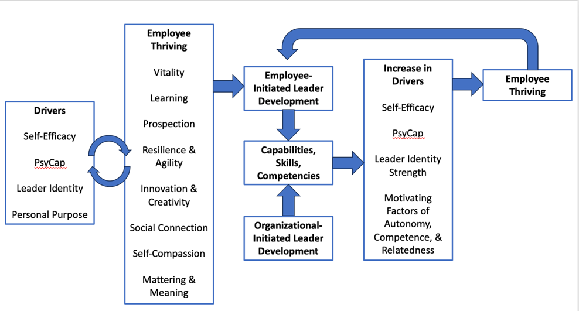
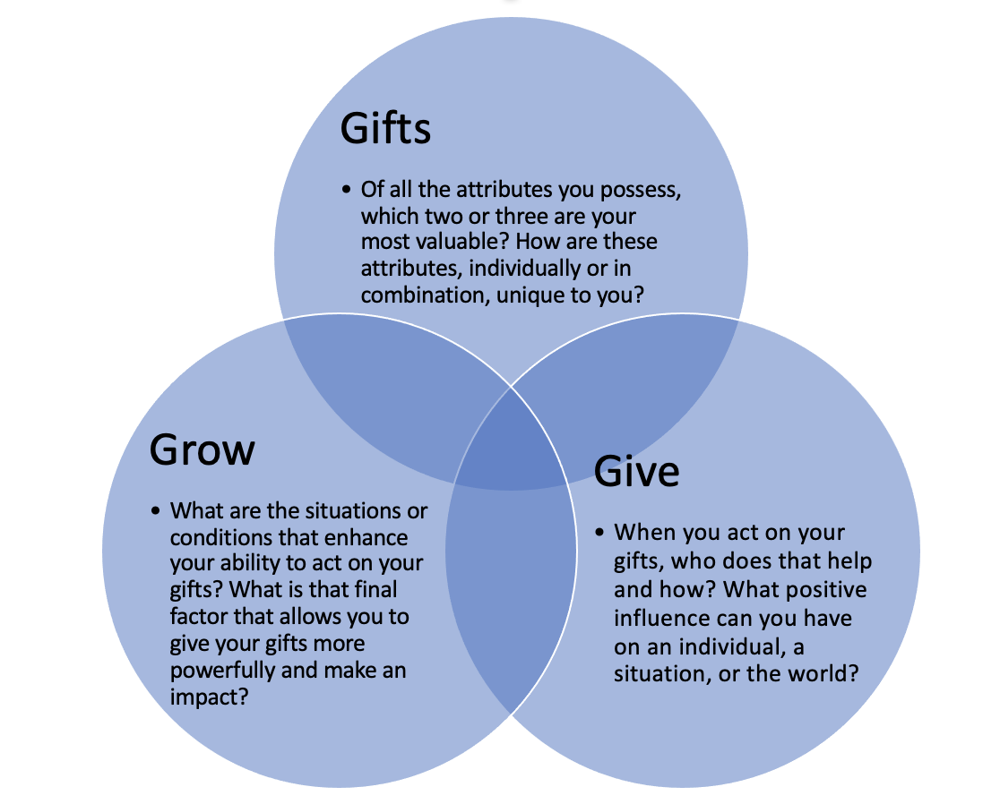

Summary
This chapter delves into the concept of thriving within organizational settings, emphasizing two crucial components: learning and vitality. Thriving is a dynamic state that encapsulates both cognitive and affective dimensions of an employee's work experience. Learning is described as the utilization and development of skills and knowledge, while vitality pertains to the excitement and motivation employees feel at work. The chapter covers the outcomes and drivers of thriving, focusing on how leader development can be an important method to enhance thriving in organizations that actually results in leaders engaging in more leader development. This reciprocal relationship creates a positive feedback loop where leader development not only encourages thriving but also enhances its dimensions, including competence, engagement, and resilience. Finally, we share insights for measuring thriving.
Chapter outline
- What is Thriving?
- Learning and Vitality as Keys to Thriving
Tool 1: Questions to ask your team about thriving
- Thriving During Rapid and Complex Change at Work
Tool 2: Organizational actions that can increase an individual’s skills across the five states for thriving
- Outcomes of Thriving at Work
Reduced negative outcomes
Increased positive attitudes
Improved workplace behaviors
- Leveraging Thriving for Leader Development
Path 1: Self-Initiated Leader Development
Self-efficacy and self-initiated leader development
Leader identity and self-initiated leader development
Psychological capital (PsyCap) and self-initiated leader development
Path 2: Organizationally-Initiated Leader Development
Self-efficacy and organizationally-initiated leader development
Leader identity and organizationally-initiated leader development
PsyCap and organizationally-initiated leader development
- How to Leverage Self-Efficacy, Leader Identity, and PsyCap
- Leader Development Enhances Thriving
Path 1: Self-Initiated Leader Development
Path 2: Organizationally Initiated Leader Development Leads to Thriving
Research Evidence for Leader Development Leading to Thriving
Secondary Outcomes of Leader Development
The Role of Purpose in Thriving and Leader Development
Tool 3: Finding personal purpose
- Assessing Thriving: Recommendations for Practitioners
Self-report measures
Multiple data types and multiple data sources
Observational data
Thriving is situationally contextual
Build systems capable of measuring thriving levels over multiple time points
Design internal experiments to gather evidence on what types of interventions are effective
Assessing thriving increases its salience as an important employee outcome
- Chapter Conclusion
Learning Goals for the Chapter
Define Thriving: Understand and articulate what it means to thrive in an organizational context, encompassing both the cognitive (learning) and affective (vitality) components.
Implement Practical Strategies: Explore actionable strategies for leaders to enhance thriving among employees, including methods to promote continuous learning and personalized vitality boosts.
Understand the Link Between Thriving and Leader Development: Comprehend how thriving employees are more engaged in and benefit from self-initiated and organizationally driven leader development opportunities.
Explore Practical Applications: Discover how to apply concepts of thriving to boost leader development, including fostering self-efficacy, strengthening leader identity, and enhancing PsyCap.
Differentiate Between Self-Initiated and Organizationally-Initiated Leader Development: Understand the differences and benefits of self-directed versus organizationally-supported leader development and how thriving impacts both.
Understand ways of measuring thriving in organizations.
Tools in the Chapter
Below is a detailed guide in five parts that guides facilitators through several tools to help set in motion a thriving organization.
Part 1: Exploring Learning and Vitality
Thriving in an organizational setting is defined as a state where employees experience both positive emotions (vitality) and a sense of ongoing development (learning). Thriving is often thought of as a temporary but desirable state reflecting an optimal work experience. The concept of thriving is broken down into two main components: learning and vitality.
Learning: This refers to the process of using and developing knowledge and skills. For employees to thrive, they must feel that they are continually growing and expanding their competencies. Leaders must actively engage with employees about their learning experiences and providing opportunities for skill development. This can be facilitated through regular one-on-one meetings where learning goals are set and discussed.
Vitality: Vitality captures the emotional and motivational aspects of work. It reflects the excitement and energy that employees derive from their work. There is variability in what energizes individuals, and strategies to boost vitality must be personalized. Leaders are encouraged to understand what excites their team members and find ways to integrate those elements into their work environment. The chapter also provides practical advice on identifying sources of vitality by reflecting on employees' interests and preferences.
Tool 1 provides a set of questions to help leaders and HR professionals assess and enhance thriving within their teams and organizations. These can be used to explore the current level of thriving for your leaders and their teams.
| Tool 1: Questions to ask yourself or your team about thriving |
|---|
(Learning) What skills are you consistently using at work? What skills do you have that you are not currently using but would like to use more? What are you currently learning/ developing that excites you? What skills/ knowledge do you want to focus on for the upcoming year? |
(Vitality)
What would you do outside of work just for fun that energizes you? How can we create similar opportunities for you in your work life? |
Part 2: Thriving During Rapid and Complex Change at Work
Next, we address the challenge of thriving in the face of rapid and complex changes in the workplace. It builds on earlier research in optimism and flourishing, introducing five key states that are essential for thriving: prospection, resilience and agility, innovation and creativity, social connection, and mattering. A series of organizational actions can be explored to further understand the key states within your organization currently. Use the tool to evaluate what actions your organization might help individuals experiences these states.
Prospection: This refers to future-mindedness or the ability to envision how current actions affect future outcomes. Effective prospection helps individuals set and pursue goals that lead to happiness and fulfillment. It emphasizes the importance of imagining and planning for positive futures to maintain motivation and engagement.
Resilience and Agility: Thriving during change requires a combination of cognitive agility, emotional regulation, self-compassion, optimism, and self-efficacy. Cognitive agility allows individuals to navigate different scenarios and maintain a flexible approach. Emotional regulation and self-compassion are crucial for managing stress and setbacks, while optimism and self-efficacy contribute to long-term resilience.
Innovation and Creativity: The ability to think creatively and innovate is essential for thriving in a changing environment. This involves generating new ideas and solutions that can address emerging challenges and capitalize on opportunities.
Social Connection: Building and maintaining social connections is vital for thriving, especially during times of crisis. Rapid rapport building and strong interpersonal relationships help individuals feel connected and supported, which is crucial for overall well-being and productivity.
Mattering: This component emphasizes the importance of feeling that one’s actions have significance and impact. Mattering relates to deriving meaning from one’s work and personal life, which enhances motivation and satisfaction.
| Tool 2. Organizational actions that can increase an individual’s skills across the five states for thriving. |
|---|
| Workplace prospection can be increased by reinforcing an organization’s purpose and reason for existing. A vision of an important future, as well as utilizing planning systems that focus on important goals, will help support employees to see a positive future. |
| Employers can use techniques such as scenario planning to help employees and leaders move from different scenarios to make effective decisions and increase cognitive agility. |
| Organizations can leverage employees’ desire for innovation and creativity in their work. Teaching employees the importance of creativity as a group effort and that many techniques, such as design thinking, are essential for innovation. |
| Chapter 7 in this volume includes a valuable activity for improving self-compassion for employees and leaders. |
| The search for meaning at work has never been stronger. Helping employees and leaders see the link between the jobs they do and how they contribute to an organization’s compelling purpose is essential. Employees need to know how their work matters to the larger organization. |
Part 3: Explore the Benefits of Thriving at Work
Research shows profound benefits of thriving at work and emphasizes the importance of creating conditions that support employee thriving. It begins by underscoring that thriving is not only a desirable state but also one that can have a wide range of positive outcomes for employees and organizations. The following three categories of benefits shown in Table 1 provides evidence for prioritizing efforts to increase employee thriving.
Table 1. Benefits of thriving at work
| Reduced negative outcomes | Increased positive attitudes | Improved workplace behaviors |
|---|---|---|
| Poor health | Job satisfaction | Organizational citizenship behaviors |
| Burnout | Job engagement | Creativity and innovation |
| Absenteeism | Organizational commitment | Voice behavior |
| Career adaptability | Taking charge | |
| Attitude toward self-development |
Below are detailed research findings across the three areas.
1. Reduced Negative Outcomes: Thriving at work is associated with a decrease in several adverse outcomes:
Poor Health: Employees who thrive are less likely to experience health issues.
Burnout: Thriving is linked to lower levels of burnout, reducing stress and fatigue.
Absenteeism: Thriving employees are less likely to miss work, contributing to better attendance.
Turnover: Thriving at work is associated with lower turnover rates, as employees are more satisfied and committed.
2. Increased Positive Attitudes: Thriving fosters several positive attitudes that enhance overall job satisfaction and engagement:
Job Satisfaction: Thriving employees typically report higher levels of job satisfaction.
Life Satisfaction: The benefits of thriving extend beyond work, improving overall life satisfaction.
Job Engagement: Thriving is linked to higher levels of engagement and enthusiasm for work tasks.
Organizational Commitment: Employees who thrive are more likely to be committed to their organization.
Career Adaptability: Thriving individuals are better equipped to adapt to changes and challenges in their careers.
Attitude Toward Self-Development: Thriving encourages a positive attitude towards personal and professional growth.
3. Improved Workplace Behaviors: Thriving supports various constructive behaviors that benefit the organization:
Organizational Citizenship Behaviors: Thriving employees are more likely to go beyond their job requirements and contribute positively to the organizational culture.
Creativity and Innovation: Thriving fosters creativity and innovation, leading to new ideas and solutions.
Voice Behavior: Thriving employees are more likely to voice their opinions and suggestions, contributing to better decision-making.
Taking Charge: Thriving supports proactive behavior, where employees take initiative and lead projects.
Part 4: Leveraging Thriving for Leader Development
We argue that thriving employees will engage in greater self-driven leader development and be more successful in organizationally-driven leader development. Figure 1 summarizes the relationships among key variables that play a role in this process. In the next section, we provide ways in which employees can leverage their development through techniques that help them thrive.
Figure 1. Reciprocal relationship between thriving at work and pathways of leader development.

Leader Development
Thriving at work contributes to effective leader development by enhancing key psychological attributes and facilitating both self-initiated and organizationally-initiated development. Specifically:
Thriving's Role: Thriving employees, characterized by high energy and a strong desire to learn, are more likely to engage in leader development activities. They actively seek out opportunities to grow and develop when they feel they are thriving.
Psychological Variables: Thriving influences several critical psychological factors—self-efficacy, leader identity, and PsyCap—that enhance leader development outcomes. These factors collectively contribute to higher engagement and success in leadership roles.
Self-Initiated Leader Development
Importance of Self-Initiation: Self-initiated leader development, where individuals take charge of their own growth, is crucial. Thriving employees are more likely to engage in this type of development, as it aligns with their intrinsic motivation and energy levels.
Psychological Needs: Self-initiated leader development fulfills key psychological needs:
Autonomy: The need for agency and self-direction.
Competence: The experience of mastery and challenge.
Relatedness: The need to connect with others.
Self-Efficacy: Thriving enhances self-efficacy, which is the belief in one's ability to achieve goals. Higher self-efficacy leads to greater pursuit of leadership roles and self-directed development.
Leader Identity: A strong leader identity, or seeing oneself as a leader, encourages individuals to seek developmental experiences to further their leadership capabilities.
Psychological Capital (PsyCap): PsyCap, encompassing hope, efficacy, resilience, and optimism, is crucial for effective leader development. Thriving boosts PsyCap, thereby enhancing motivation and persistence in leader development.
Organizationally-Initiated Leader Development
Impact of Thriving: Even in organizationally-driven development programs, thriving employees make the most of these opportunities. They are more likely to opt into optional programs and excel in mandatory ones due to their high energy and commitment.
Self-Efficacy: High self-efficacy supports success in structured development programs, as it helps individuals persist and cope with challenges.
Leader Identity: A strong leader identity can evolve through organizational development programs, though there may be a lag in the development of this identity over time.
PsyCap: High PsyCap leads to a positive perception of organizational development programs and helps individuals view challenges as opportunities for growth.
Strategies for Leveraging Thriving
The interplay between leader development and thriving creates a virtuous cycle where leader development activities enhance thriving, which in turn fosters further leader development. This reciprocal relationship underscores the importance of both individual and organizational efforts to promote continuous growth and well-being. Across these two paths of leader development there are some key actions for organisations to take that focus on specific elements to boost thriving and include:
Boosting Self-Efficacy: Provide mastery experiences, vicarious experiences, verbal persuasion, and mood-boosting activities to enhance employees' self-efficacy.
Enhancing Leader Identity: Encourage identity work through personal narratives and reflections on past and future leadership experiences to strengthen leader identity.
Developing PsyCap: Implement training and development programs that promote hope, efficacy, resilience, and optimism to enhance PsyCap. Recognize that PsyCap can be influenced by job characteristics, organizational climate, and leadership styles.
Addressing Languishing: Combat languishing by focusing on increasing self-efficacy and PsyCap, which can help rejuvenate motivation and engagement in leadership development.
The Reciprocal Feedback Loop
The reciprocal nature of the thriving-leader development relationship can be visualized as a positive feedback loop such that leader development enhances thriving which encourages leaders to engage in more leader development.
This positive feedback loop operates at various stages of leader development:
Early Career Development: Involves activities like mentoring and job rotations, which help individuals explore their strengths and interests. These experiences contribute to their sense of competence and engagement, enhancing their thriving.
Mid-Career Development: Focuses on executive coaching and leadership assessments, helping individuals refine their leadership style and vision. This development supports their sense of purpose and achievement, further promoting thriving.
Senior Leadership Development: Includes succession planning and legacy building, enabling leaders to shape their organization's culture and values. This stage enhances their sense of accomplishment and engagement, reinforcing thriving.
Leader development affects thriving through several mechanisms:
Learning and Competence: Thriving is partly defined by the feeling of using and developing one’s knowledge and skills. Leader development activities that emphasize learning and skill acquisition contribute to thriving by satisfying this learning component.
Engagement and Vitality: Engagement in development activities can enhance both facets of thriving—learning and vitality. Gamification and interactive learning experiences can make leader development more engaging, thereby enhancing overall thriving.
Self-Initiated vs. Organizationally Initiated Leader Development
Self-Initiated Leader Development:
Empowerment and Proactivity: Individuals who proactively seek out leader development opportunities often do so because they feel empowered and in control of their own growth. This self-directed approach can lead to higher levels of engagement and a stronger sense of purpose, contributing to greater thriving.
Voluntary Engagement: Research shows that voluntary engagement in leader development is more likely to result in the application of knowledge and skills, further reinforcing thriving. Proactive employees who choose to invest in their development are often more motivated and likely to experience positive outcomes.
Organizationally Initiated Leader Development:
Psychological Wellbeing: Even when leader development is mandatory or initiated by the organization, it can still positively impact thriving by improving psychological wellbeing. Training and development activities provide feedback, enhance self-efficacy, and foster resilience, all of which contribute to thriving.
Purpose and Meaning: Leader development can help individuals clarify their values and goals, enhancing their sense of purpose and alignment with organizational objectives. This alignment fosters greater engagement and vitality, essential components of thriving.
Purpose in life and work is critical for thriving and effective leadership:
Purpose-Driven Leadership: Leaders who have a clear sense of purpose are more likely to succeed and inspire others. Purpose-driven leadership helps in aligning personal and organizational goals, contributing to both leader development and thriving.
Goal and Meaning: A sense of purpose enhances motivation and resilience, driving continued development and contributing to a thriving work environment. Purpose helps leaders stay focused on their goals and fosters a growth mindset, crucial for both leader development and thriving.
Tool 3: Finding personal purpose.
A personal purpose statement defines what you want to accomplish in life. We know it can give direction in your life and reflect what you stand for, your goals, and your core values. It is usually only one to two sentences long. There are different ways to approach finding one’s purpose. Below are a few helpful steps for leaders to find their personal purpose.
Build self-awareness of what you contribute to the world and what drives you. The first step is often a ranking of what you value. We find that understanding what you value in life more generally and how that relates to your work is an essential step in developing a personal purpose. Several value assessments can help. With the list below, for example, you can pick the ten most important values to you and rank order those. Scan through the list quickly – it’s deliberately not in alphabetical order. Go with your ‘gut feeling’ and mark those that jump out as most important to you. From the values you highlighted, mark the ‘top ten.’ Go through your top ten and give them an importance rating, with 1 being Very important and 5 being Of some importance. This activity allows you to reflect on how you carry out your values through your work and home life.
| Sense of Achievement | Providing a good level of service | Adventure |
|---|---|---|
| Status of profession | Fun | Collaboration |
| Power | Recognition | Learning |
| Harmony | Trust | Security |
| Independence | Influence | Kindness |
| Gratitude | Creativity | Opportunity to make decisions |
| Helping people/society | Open-minded | Order |
| Partnership | Variety | Opportunities to learn and develop |
| Acquisition of knowledge | Reward | Opportunity for promotion |
| Self-esteem | Freedom | Strength |
| Prudence | Leadership | Happiness |
| Compassion | Working within a team | Risk |
| Results | Talent | Humility |
| Dignity | Empowerment | Being considered an expert in my field |
| Respect | Managing a project | Knowledge |
| Growth | Community | Innovation |
| Friendship | Commitment | Management responsibility |
| Opportunities for flexible working | Having a set routine | Salary |
| Working close to home | Access to parking | Supervising others |
| Good work/life balance | Working for a well-known organization | Opportunity for promotion |
The second step focuses on uncovering what you contribute to your work or the world. One technique we used comes from the three G approach by Korn Ferry (Korn Ferry, 2022). These include your gifts, what you give, and what helps you grow. The figure below summarizes the questions to ask yourself to extract the essence of your purpose. Therefore, uncovering the three G’s takes knowing yourself, what you value, and what you contribute.
Kornferry, 2022. What is your purpose. Retrieved https://www.kornferry.com/institute/what-is-your-purpose

In writing a personal purpose statement, it is also important to remember that a personal purpose does not just jump out at you. It is a process that takes time and effort to 'mine' from your life by looking back, looking inward, and looking forward. A personal statement is not static and can evolve. Permit yourself to start small and simple with your purpose statement. Sharing your progress on your purpose statement with someone who knows you can also be helpful.
Part V. Assessing Thriving: Recommendations for Practitioners
Assessing thriving in leaders or employees involves understanding and measuring both emotional vitality and cognitive learning. Here’s a structured approach for practitioners to effectively assess thriving, given its multifaceted nature and the potential for socially desirable responses.
Table 2. Items on Porath et al.’s (2012) thriving at work scale. Porath, C., Spreitzer, G., Gibson, C., & Garnett, F. G. (2012). Thriving at work: Toward its measurement, construct validation, and theoretical refinement. Journal of Organizational Behavior, 33(2), 250 – 275.
Vitality factor
I feel alive and vital.
I have energy and spirit.
I do not feel very energetic. (R)
I feel alert and awake.
I am looking forward to each new day.
Learning factor
I find myself learning often.
I continue to learn more as time goes by.
I see myself continually improving.
I am not learning. (R)
I am developing a lot as a person.
Note: All items are rated in reference to respondents’ experiences at work. Items are rated on a scale ranging from 1 (disagree strongly) to 7 (agree strongly). (R) indicates items to be reverse scored.
Self-Report Measures
Use Self-Report Surveys: Self-report measures are crucial because thriving is a personal experience involving internal feelings of vitality and perceptions of growth. These surveys help capture subjective experiences of thriving.
Address Social Desirability Bias: Be aware that respondents might inflate their self-reports due to social desirability biases. To mitigate this, include reverse-coded items and ensure anonymity to encourage honest responses.
Multiple Data Types and Sources
Incorporate Various Data Types: Use a combination of self-reports, observer ratings, physiological indicators (e.g., cortisol or dopamine levels), and objective behavioral indicators. This triangulation helps paint a fuller picture of thriving.
Gather Data from Multiple Sources: In addition to self-reports, gather input from supervisors, peers, and subordinates. This multi-source feedback provides a more comprehensive view of how thriving is perceived across different levels and interactions.
Observational Data
Use Trained Observers: Trained observers can assess aspects of thriving, such as vitality, by following specific guidelines and using structured rubrics. This approach ensures consistency and reliability in observations.
Consider Untrained Observers: If trained observers are not available, provide clear instructions and rubrics to untrained observers. Their observations, while potentially less precise, can still offer valuable insights into leaders’ vitality and engagement.
Situational Context and Cultural Relevance
Contextualize Thriving: Recognize that thriving can look different depending on the context (e.g., work vs. home) and individual differences (e.g., introverts vs. extroverts). Ensure that your measures are sensitive to these contextual variations.
Adapt to Cultural Differences: Be mindful of cultural differences in expressions of thriving. Tailor your assessment tools to be culturally relevant and avoid biases that might skew the results.
Measure Over Time
Track Thriving Longitudinally: Assess thriving at multiple time points to understand how it evolves over time. This approach helps identify patterns, such as initial declines in thriving during role transitions followed by recovery.
Use Trend Analysis: Analyze trends to detect changes and predict future outcomes. This analysis can help in assessing the long-term impact of developmental interventions on thriving.
Design Internal Experiments
Conduct Experiments: Use A/B testing or controlled experiments to evaluate the effectiveness of different developmental interventions. Compare outcomes between groups that receive different types of interventions to determine which are most effective.
Use Control Groups: Implement control groups to benchmark the impact of interventions. This method provides a clearer understanding of what contributes to or detracts from thriving.
Increase Salience of Thriving
Promote Awareness: Educate supervisors and stakeholders about the importance of thriving and its impact on performance and engagement. Highlight both the emotional (vitality) and cognitive (learning) aspects of thriving.
Encourage Investment: Use assessment results to advocate for investments in developmental opportunities. Demonstrating the link between thriving and positive outcomes can help secure support for further development initiatives.
By following these principles, practitioners can effectively assess thriving, understand its nuances, and leverage insights to foster a thriving environment in their organizations.
Links to Other Chapters
In this chapter, we learn that thriving as a leader through the use of organization-led and self-led routes of leader development. For a more detailed explanation of leader goal setting and reconciling leader identity to enhance meaningfulness please refer to Chapter 3 (Jokisaari & Adriasola) and Chapter 6 (Gatti et al.) of this book.
Key Readings
Kornferry, 2022. What is your purpose. Retrieved https://www.kornferry.com/institute/what-is-your-purpose
Further Readings
Abid, G., Ahmed, S., Qazi, T. F., & Sarwar, K. (2019). How managerial coaching enables thriving at work. A sequential mediation. Journal of Entrepreneurship, Management, and Innovation, 16(2).
Cardona, P., Rey, C., Craig, N. (2019). Purpose-driven Leadership. In: Rey, C., Bastons, M., Sotok, P. (eds) Purpose-driven Organizations. Palgrave Macmillan, Cham.
Cohen, N., & Ochsner, K. N. (2018). From surviving to thriving in the face of threats: the emerging science of emotion regulation training. Current Opinion in Behavioral Sciences, 24, 143-155.
Jiang, Z. (2017). Proactive personality and career adaptability: The role of thriving at work. Journal of Vocational Behavior, 98, 85 – 97.
Kellerman, G. R., & Seligman, M. E. (2023). Tomorrowmind: Thriving at work with resilience, creativity, and connection—Now and in an uncertain future. Simon and Schuster.
Kleine, A-K., Rudolph, C. W., & Zacher, H. (2019). Thriving at work: A meta-analysis. Journal of Organizational Behavior, 40(9-10), 973 – 999.
McKinsey (2023). Our insights for new leadership for a new era of thriving organisations. https://www.mckinsey.com/capabilities/people-and-organization/our-insights/new-leadership-for-a-new-era-of-thriving-organizations
Spreitzer, G., Sutcliffe, K., Dutton, J., Sonenshein, S., & Grant, A. M. (2005). A socially embedded model of thriving at work. Organization Science, 16(5), 453 – 562.
Tummers, L., Steijn, B., Nevicka, B., & Heerema, M. (2018). The effects of leadership and job autonomy on vitality: Survey and experimental evidence. Review of Public Personnel Administration, 38(3), 355 – 377.